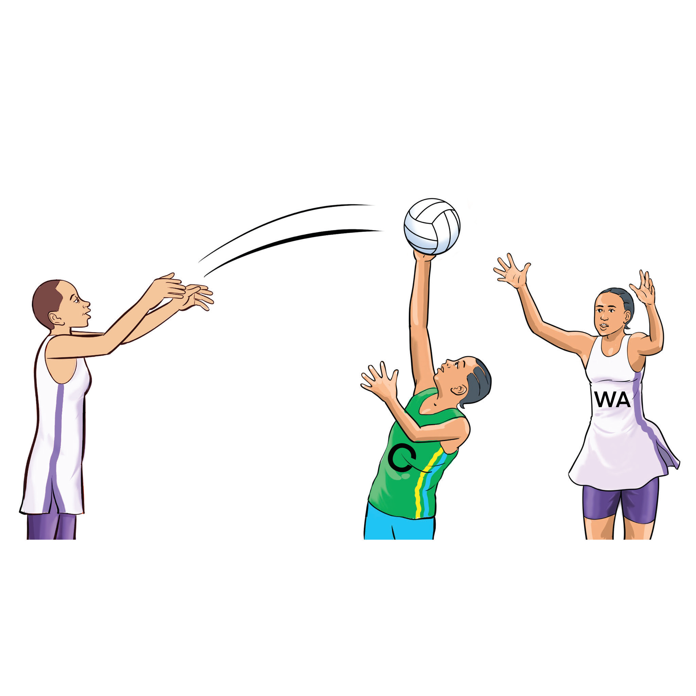
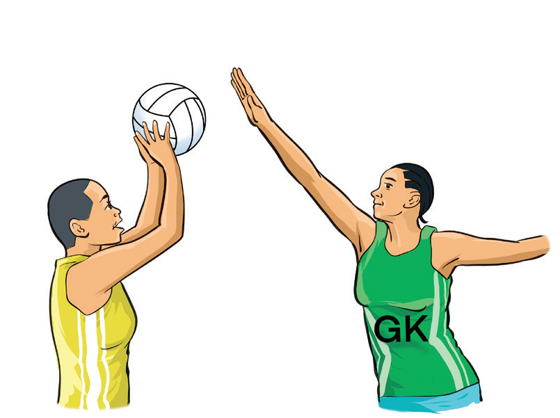
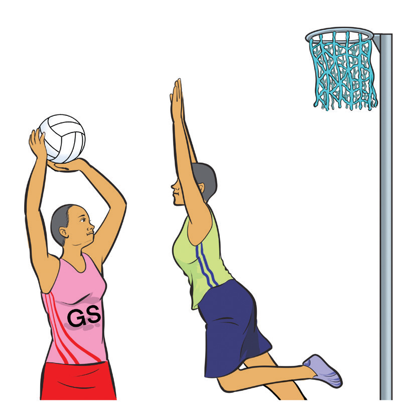

Blocking shots
Blocking shots is a defensive technique used by players to prevent an opposing player from scoring by intercepting or obstructing shots aimed for a goal. It is a key defensive skill that challenges shooters and reduces their scoring accuracy. A defender should stand with arms fully extended and hands open to make it difficult for the shooter to score, as shown in Figure 1.21 (a and b). Timing the jump correctly is important to contest the shot without making a foul and conceding a penalty. Additionally, maintaining a strong stance after blocking ensures the defender can quickly react to rebounds or loose balls.

(a)

(b)